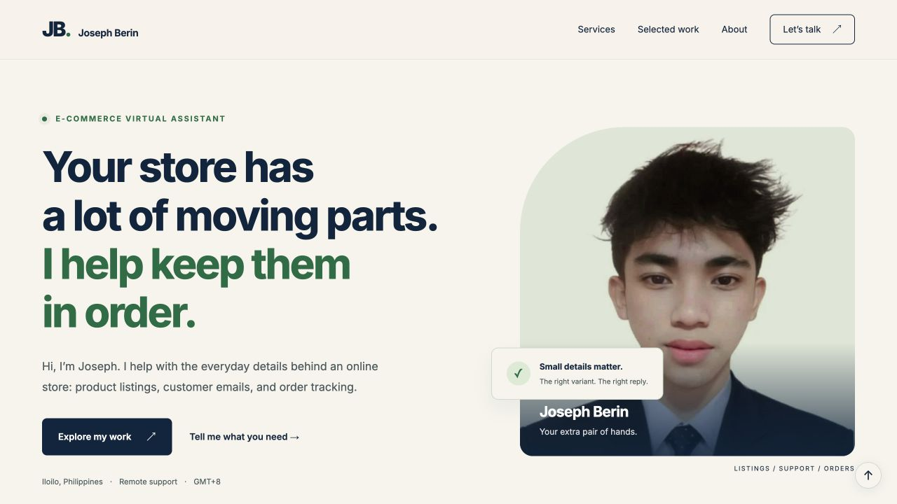

PROJECT 02 / OWN-WEBSITE AUDIT · 09 OCT 2026
A focused SEO review of my portfolio
A review of the published version before this draft. The purpose is to make the e-commerce and SEO offer clearer, record what already exists and propose a small content plan.
Method
Read the live homepage’s rendered title, description, headings, canonical and image text. Check the catalog demo’s meta robots directive. Capture a dated screenshot.
Scope
Public-page review only. No Search Console, GA4, keyword-tool export, ranking data, server logs or performance test was used. This is not a full technical crawl.

01 / FINDINGS LOG
What was actually observed.
| Item | Observation | Recommendation / next check |
|---|---|---|
| Page title | Joseph Berin | E-commerce Virtual Assistant | Retain the name and e-commerce service. Add SEO support if the revised offer is approved. |
| Description | E-commerce support for product listings, customer emails and order tracking. Meet Joseph Berin and explore hands-on demos of his approach to store operations. | A description is already present. Rewrite for the expanded service mix; do not report it as missing. |
| Main heading | The heading leads with moving parts and keeping things in order. | Use a direct description of the services so visitors can identify the offer quickly. |
| Canonical | https://josephberinyourva.site/ | Keep the homepage canonical consistent after publication. This alone does not prove indexing. |
| Image text | Portrait alt text: Joseph Berin. | Appropriate for this portrait. Add useful descriptions to new project screenshots. |
| Catalog demo | Meta robots = noindex,follow. | An observed exclusion instruction. Decide which future case-study pages should be eligible for search; do not treat all noindex pages as errors. |
Editorial priorities: first confirm the offer, then revise title, description and heading together. Search performance and indexing remain unmeasured.
02 / PROPOSED COPY
Metadata and heading draft.
Joseph Berin | E-commerce VA & SEO Support
Explore Joseph Berin’s e-commerce and SEO support samples: catalog cleanup, customer email drafts, order tracking and an on-page website audit.
E-commerce and SEO support for small online businesses
This is proposed copy. The current live website has not been changed. The review preview itself remains marked noindex.
03 / KEYWORD-TO-PAGE MAP
Map the topic before writing more pages.
These are editorial candidates based on the services, not measured keyword opportunities. No search volumes or difficulty scores have been invented.
| Candidate topic | Likely intent (hypothesis) | Proposed destination | Content needed |
|---|---|---|---|
| ecommerce virtual assistant | Find store support | Homepage | Clear scope, tasks, examples and contact details. |
| product listing assistant | Find catalog help | Store operations case study | Original entries, prepared fields and unresolved details. |
| ecommerce email support | Find customer support | Email samples section | Full replies, store policy and escalation notes. |
| order management virtual assistant | Find administrative help | Store operations case study | Order action list and handoff process. |
| on page SEO assistant | Find basic SEO support | SEO service section / audit | Specific checks, evidence and proposed copy. |
| Joseph Berin virtual assistant | Find this person | Homepage / about | Consistent name, location and contact information. |
Validation plan: inspect actual search results for intent, then use authorized Search Console query data when available. Keep related topics together unless there is enough useful content for a separate page.
04 / CONTENT BRIEF
A service section that answers the hiring question.
Reader & purpose
A small-store owner deciding whether to delegate page checks and content preparation. Explain the deliverable and show a sample before asking for contact.
Suggested structure
- Basic SEO support: the tasks covered
- What is included in a page review
- Evidence from a completed audit exercise
- Access and information needed to start
Draft service copy
I’m developing my basic SEO support skills through website review and content-planning exercises. My portfolio includes a review of my own site, with observed metadata, heading notes and proposed copy.
For a small first task, the scope could be a short list of pages, an agreed checklist and a reviewable findings document. I would record what is present, explain each proposed change and flag questions before anything is published.
Share the page links, your target audience and any existing guidelines so we can define the task.
05 / VERIFICATION & SOURCES
What would be checked after approval.
- Confirm the agreed title, description and heading on the published page.
- Recheck the canonical and intended indexing directives.
- Check that project links and downloads work on mobile.
- Use authorized Search Console access to inspect indexing and later compare relevant query/page data over a defined period.
Content clarity and descriptive page information follow Google’s SEO Starter Guide. The findings above come from the live homepage and the catalog demo, captured October 9, 2026.
No traffic growth, ranking improvement or indexing outcome has been demonstrated.